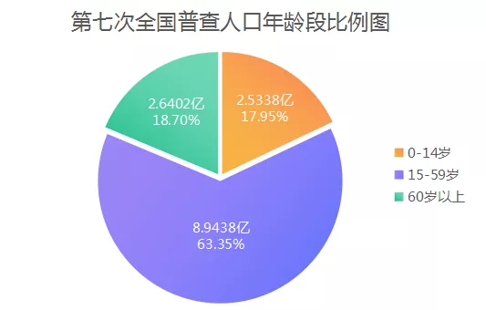

| 在中国社会老龄化趋势越来越明显的今天，怎么才能老有所养.老有所依？ 我国确立了“以居家为基础、社区为依托、机构为补充，医养相结合”的养老产业框架和9073养老服务计划，应有90%的老人在家中养老，7%的老人在社区养老，3%的老人在养老机构养老，智能养老重点主要集中在社区居家养老上。 而开发一款用于养老的智慧APP则可为老龄化解决百分之90以上的养老问题。 |  |
| 智慧养老可理解为借助智能可穿戴设备及移动互联网技术，打造智慧养老管理系统， 为中高端养老机构提供软硬件设施及解决方案。 | |
| 项目主旨：智慧养老APP：21是世纪万物互联的时代，我们团队致力于智慧居家养老服务类软件,实现养老产业与物联网结合，创新发展智慧养老新体系 | |
| 智慧养老项目初衷:目的是构建与人口老龄化程度相适应和经济社会相协调的App，以社区家庭养老综合服务站为基础的养老服务平台，在构建完整服务体系,创建智能化服务格局，提供个性化服务方式等方面下功夫，实现“一年全覆盖，两年离不开”的目标，全力打造“没有围墙的养老院”。 |